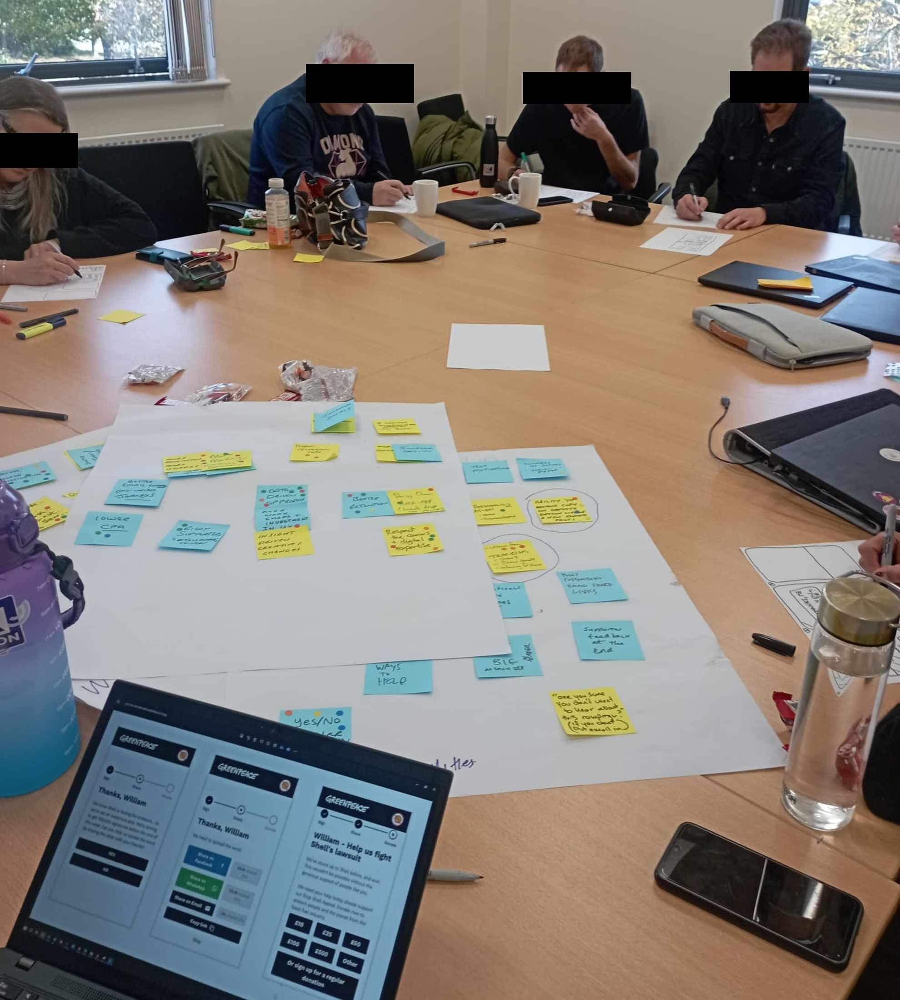

Approach
Research and accessibility aren't two disciplines here. They're one habit.
Every project in Work runs on the same underlying method. This page is that method, made explicit.
Research philosophy
Evidence before opinion, always
I default to mixed methods: qualitative research for the "why" behind behavior, quantitative and A/B testing for the "how much" a change actually moves. Neither replaces the other: a usability session tells you a form feels confusing, while an A/B test tells you whether fixing it actually changes conversion.
Just as important as any single study is the culture around it. Across every role, I've worked to embed evidence-based practice into teams that didn't start with a UX research function: running discovery processes, facilitating inclusive design workshops, and making research findings legible to non-designers so decisions stay grounded in evidence rather than opinion.

Methods toolkit
What I actually run
Discovery
Discovery studies and stakeholder interviews to frame the real problem before any solution work starts.
Usability testing
Moderated and unmoderated sessions via Zoom, Teams, UserBrain and UserTesting, run with sample sizes from 20 to 100+ participants depending on stakes.
A/B testing
Live experimentation to validate that a design change moves the metric it was meant to move, not just that it "feels better."
Journey mapping
End-to-end user journeys and user stories that keep design decisions anchored to both user needs and business goals.
Co-design
Working sessions with the people who'll actually use the system, including the scientists and researchers themselves at SGX3.
Data synthesis
Pairing qualitative findings with product analytics so insights are triangulated, not taken on a single source's word.
Accessibility
Built in from the first wireframe
Accessibility shows up in every case study on this site, not as a separate audit bolted on at the end but as a standing question through discovery, design and testing: who does this exclude, and what does it cost them?
That standard isn't theoretical, it's backed by three Microsoft accessibility credentials and applied on every project on this site: from the Oxfam GB donation flow that reached 10M+ donors, to the NSF-funded Interactive Outbreak Simulator, where the same lens helped grow its scientist user base from 100+ to 800+.
Accessibility Fundamentals
Digital Accessibility
Disability and Accessibility
Tools
What I work in
Figma · Adobe Creative Suite · ChatGPT · Claude · UserBrain · UserTesting · Miro · Jira · Monday.com · Zoom · Teams
See the method applied
Every case study in Work names its specific research methods, sample sizes, and accessibility considerations.